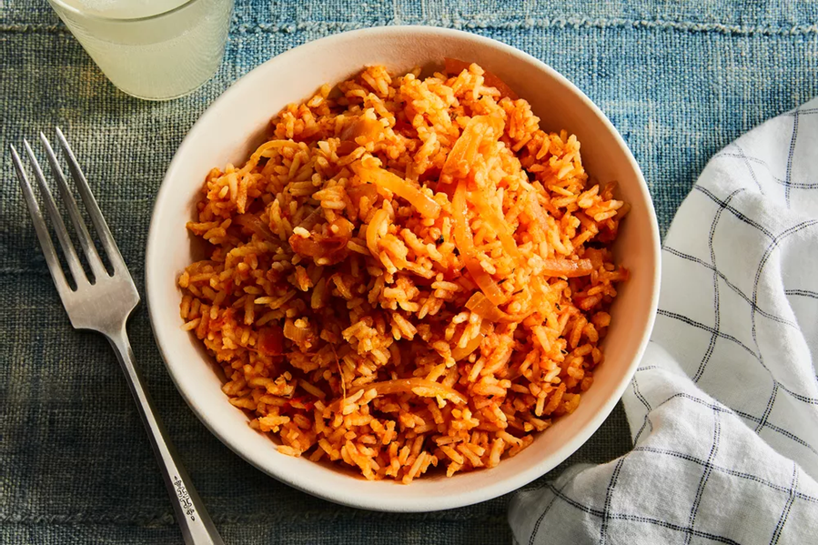

| 
|
- 1/3 cup oil (vegetable/canola/coconut, not olive oil)
- 6 medium-sized fresh plum/Roma tomatoes, chopped, OR a 400-gram tin of tomatoes
- 6 fresh, red poblano peppers (or 4 large red bell peppers), seeds discarded
- 3 medium-sized red onions (1 sliced thinly, 2 roughly chopped), divided
- 1/2 to 1 hot pepper, or to taste (yellow Scotch bonnets are my favourite)
- 3 tablespoons tomato paste
- 2 teaspoons (Caribbean/Jamaican-style) curry powder
- 1 teaspoon dried thyme
- 2 dried bay leaves
- 5 to 6 cups stock (vegetable, chicken, or beef) or water, divided
- 2 teaspoons unsalted butter (optional), divided
- 4 cups uncooked converted long-grain rice or golden sella basmati, rinsed
- Salt, to taste
- Black and white pepper, to taste
- Extra: sliced onions, tomatoes
|